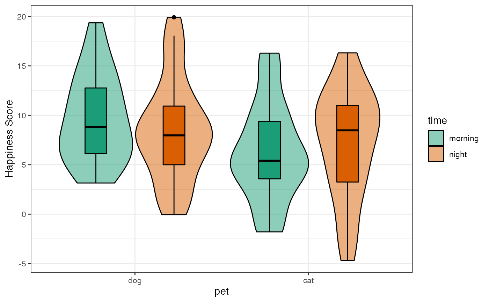
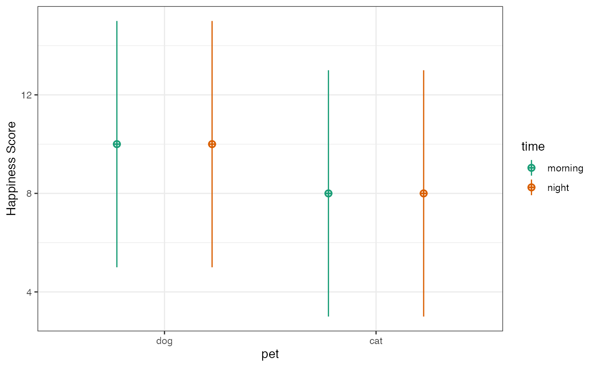

library(scienceverse) #> #> ************ #> Welcome to scienceverse For support and examples visit: #> http://scienceverse.github.io/ #> - Get and set global package options with: scienceverse_options() #> ************ # suppress most messages scienceverse_options(verbose = FALSE)
Once you’ve created a scienceverse study, you can set up a project from the meta-study file. Here’s a simple example testing group differences and simulating the data for the groups.
First, set up the basic study object and add a simulated dataset.
s <- study("Demo") %>% add_sim_data("dat", within = list(time = c("morning", "night")), between = list(pet = c("dog", "cat")), dv = c(y = "Happiness Score"), mu = list(dog = c(10, 10), cat = c(8)), n = 30, r = 0.5, sd = 5, long = TRUE )
Plot the actual data and the design to check it looks like you expect.


Here, we’re adding two hypotheses, along with their associated analyses, evaluation criteria, and criteria for corroboration or falsification. These are very simple examples for demonstration, but you can include more complex analyses in curly brackets or as external .R files.
s <- s %>% add_hypothesis("group", "Dogs will be happier than cats") %>% add_analysis("A1", scienceverse::t_test(y~pet, dat)) %>% add_criterion("p", "p.value", "<", 0.05) %>% add_criterion("dir", "estimate[1]", ">", "estimate[2]") %>% add_eval("c", "p & dir") %>% add_eval("f", "p & !dir") %>% add_hypothesis("time", "Pets will be happier in the morning than at night") %>% add_analysis("A2", scienceverse::t_test(y~time, dat)) %>% add_criterion("p", "p.value", "<", 0.05) %>% add_criterion("dir", "estimate[1]", ">", "estimate[2]") %>% add_eval("c", "p & dir") %>% add_eval("f", "p & !dir") %>% study_analyse()
NB: I’m using the scienceverse function t_test() instead of t.test because it gives you the Ns for each group in between-group comparisons (useful for meta-analyses) and also labels the estimates to avoid confusion.
Aftr you’ve run study_analyse(), printing the study object will show a summary of the evaluation.
s #> Demo #> ---- #> #> * Hypotheses: group, time #> * Data: dat #> * Analyses: A1, A2 #> #> Hypothesis group: Dogs will be happier than cats #> #> Criterion p: #> * p.value < 0.05 is TRUE #> * p.value = 0.000 #> #> Criterion dir: #> * estimate[1] > estimate[2] is TRUE #> * estimate[1] = 10.998 #> * estimate[2] = 6.958 #> #> Conclusion: corroborate #> * Corroborate (p & dir): TRUE #> * Falsify (p & !dir): FALSE #> #> Hypothesis time: Pets will be happier in the morning than at night #> #> Criterion p: #> * p.value < 0.05 is FALSE #> * p.value = 0.490 #> #> Criterion dir: #> * estimate[1] > estimate[2] is TRUE #> * estimate[1] = 9.298 #> * estimate[2] = 8.658 #> #> Conclusion: inconclusive #> * Corroborate (p & dir): FALSE #> * Falsify (p & !dir): FALSE
You can save the study in JSON (machine-readable) format and reload it later.
study_save(s, "study.json") remove(s) s <- study("study.json")
You can get all the results with the get_result() function. If you don’t specify the result name or the analysis ID, it defaults to all of the results of the first analysis. It returns a list that you can use, but will display an RMarkdown-formatted list if you print it (and set the chunk options to results='asis').
get_result(s, analysis_id = "A1")
get_result(s, analysis_id = "A2")
Get a specific result from a specific analysis.
get_result(study = s, result = "p.value", analysis_id = "A2", digits = 3, return = "value") #> [1] 0.49
Set return to “char” if you want to keep trailing zeros (this returns the number as a character string).
get_result(study = s, result = "parameter", analysis_id = 1, digits = 5, return = "char") #> [1] "117.90300"
You can display the value as a link if you set return to “html”. You can use the shorthand function get_html if you only have one study object loaded. The digits default to the global option, so you can set that as shown.
options(digits = 3) get_html("p.value") #> [1] "<a href='#analysis_1' title='Analysis 1 Result p.value'>0.000</a>"
You’ll probably want to use get_html() inline most of the time like below. The links go to a section at the end of this document that is created with make_script().
You can also display the value as a link to an external analysis file created with make_script. For the shorthand function, set the analysis link with scienceverse_options() as shown.
# create the analysis .Rmd and .html file, # or you can do this outside this script make_script(s, "analysis.Rmd") rmarkdown::render("analysis.Rmd", quiet = TRUE) scienceverse_options(analysis_link = "analysis.html") get_html("p.value") #> [1] "<a href='analysis.html#analysis_1' title='Analysis 1 Result p.value'>0.000</a>"
Here the inline links now go to an external file:
Add the script inline at the end with the function make_script. Set header to FALSE to omit the YAML header. Set header_lvl to change the default starting header level of 2.This function will save the data and codebooks in a folder called “data”. Set the argument data_path to NULL to include the actual data in the text of the script. For large datasets, you’ll want to leave it as the default “data” folder (or set a custom folder name).
make_script(s, header_lvl = 3, header = FALSE) %>% cat()
scienceverse::t_test(y ~ pet, dat) scienceverse::t_test(y ~ time, dat)